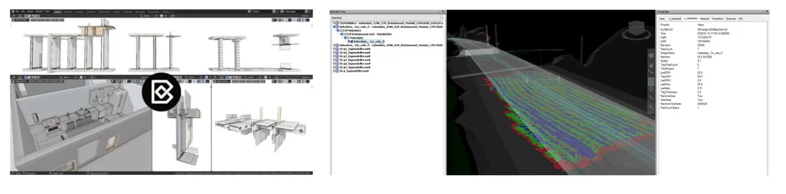

E23 - 41934
Introduction to Native IFC
Martina Jakubowska
Inspired by "Introduction to OpenBIM, Native IFC, and Open Source AEC", Dion MoultWhat is the problem?
BIM data is very unstructured.
BIM data is very unstructured.
➡ Revit wall data model ≠ ArchiCAD wall data model
➡ Data transfer between programs depends on "translation."

GRAPHISOFT | ArchiCAD 18 Help
BIM data is very unstructured.
➡ Revit wall data model ≠ ArchiCAD wall data model
➡ Data transfer between programs depends on "translation."
➡ It affects data quality.
➡ A lot of time is spent discussing the best "definition" for a wall.
➡ Current BIM is often no better than a spreadsheet...
BIM data is very unstructured.
With a spreadsheet, everyone will at least be able to:
➡ Have access to it
➡ See and read how, for example, a wall is defined.
➡ Define and expand the data structure as needed.
➡ Connect third-party programs, write scripts, expand and improve it.
➡ A spreadsheet doesn't expire and doesn't require licenses.
Solution: Open data standards.
Solution: Open data standards.
An open data standard is a set of specifications (or requirements) for how some sets of data should be made publicly available. [...]
Open data standards are generally developed “in the open”, meaning that anyone who is interested has a way to contribute.
OPEN DATA DIRECTORY (datastandards.directory/glossary), data.europa.eu
Solution: Open data standards.
Three main types of open data standards:- Schematic: Defines structure of the data to be published. This includes the names, descriptions, and data types of data fields or columns.
- Semantic: Defines the terminology or language in the data which is published. E.g. define the terms "Arson" and "Robbery"
- Atomic: Defines how basic elements of data must be represented. E.g., a date and time should be formatted as “2017-01-01T13:00:00Z” OPEN DATA DIRECTORY (datastandards.directory/glossary)
Open data standards applied in BIM → Open BIM.
Examples of Open BIM standards
- IFC (Industry Foundation Classes)
- BCF (BIM Collaboration Format)
- IDS (Information Delivery Specification)
- MicroMVD (Micro Model View Definition)
- BSDD (buildingSMART Data Dictionary)
- COBie (Construction-Operations Building information exchange)
- BrickSchema
- BHoM
- dotbim
- GbXML
- ...
IFC is a standardized, digital description of the built environment. It is an open, international standard (ISO 16739-1:2018), meant to be vendor-neutral, or agnostic, and usable across a wide range of hardware devices, software platforms, and interfaces for many different use cases.
OpenSource is about freedom of users.
The four freedoms of free software*
 Free Software Foundation Europe (fsfe.org/freesoftware/freesoftware.en.html)
Free Software Foundation Europe (fsfe.org/freesoftware/freesoftware.en.html)
* Note: Free software doesn't necessarily mean free of cost!
Translated OpenBIM vs Native OpenBIM
Translated OpenBIM still presents many of the same problems...
Native OpenBIM


Blender BIM
- Aug 2019: 83 lines of code written to export Blender meshes to IFC
- Oct 2019: Packaged and released to the public
- Jan 2020: Community user automates visualization of compactor machines
- Nov 2020: Swiss army knife of free BIM utilities in production use on commercial projects
Blender BIM